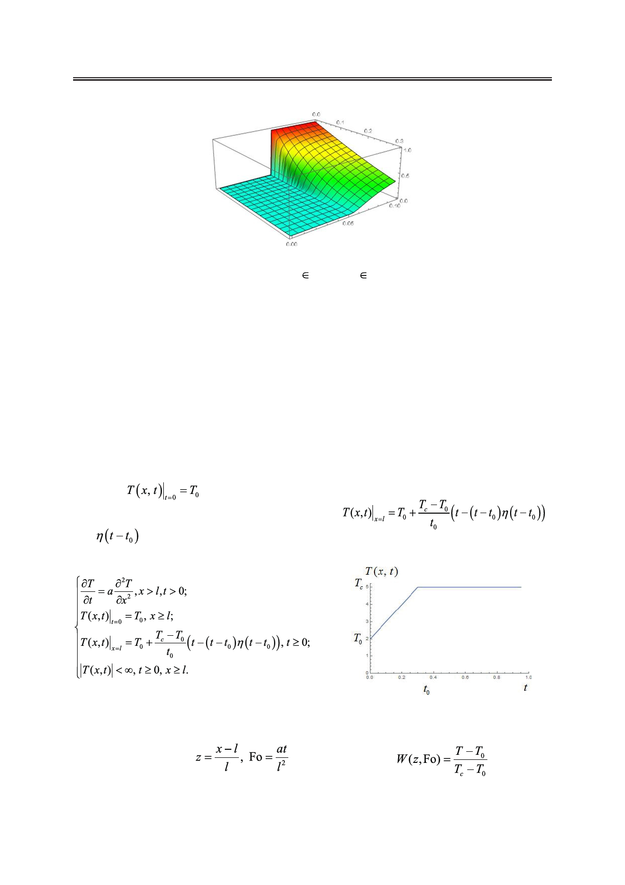

Математическое моделирование влияния релаксационных процессов на температурные
поля в упругом полупространстве
Рис. 5. Трехмерный график зависимости безразмерной температуры
W(z, Fo) от z и Fo: z [0; 1], Fo [0; 0.4]
(температура на границе изменяется мгновенно).
Анализ полученных данных позволяет сделать следующие выводы:
1) при малых значениях критерия Фурье безразмерная температура имеет максимум
на левой границе и постепенно убывает по толщине пластины, тем самым при больших
z имеет наименьшее значение;
2) с ростом критерия Фурье (с увеличением времени) температура в пластине стре-
мится к температуре на левой границе, т.е. выравнивается, причем выравнивание тем
быстрее, чем меньше z.
Сравним случаи, когда на границе произошел резкий скачок температуры и темпе-
ратура на границе меняется плавно (по линейному закону) от Т0 до Тс за время t0 (время
релаксации [7]).
Пусть в начальный момент времени распределение температуры по толщине пласти-
ны равно
. Если на левой границе происходит плавное повышение температу-
ры, описываемое следующей функцией [4, c. 199]
,
где
– функция Хевисайда [5] (рис. 6), тогда, чтобы найти закон распределения
температуры по толщине пластины, рассмотрим следующую задачу:
Используя замену
дачу в безразмерном виде (рис. 7):
Рис. 6. График температурной функции на границе
(температура изменяется плавно, с учетом времени
релаксации).
(критерий Фурье),
, имеем за-
44
Российский технологический журнал 2017 Том 5 № 5